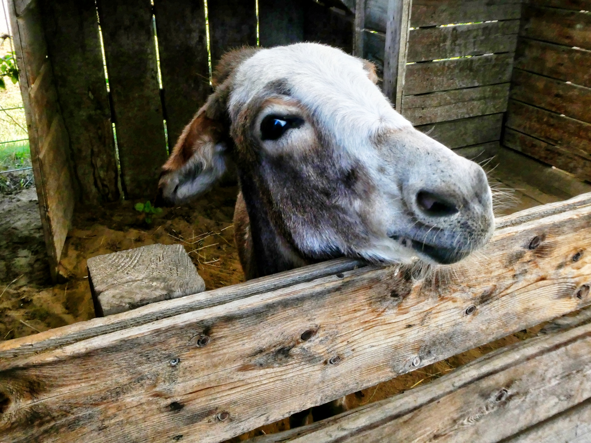

A List of My Projects
I have done a few things:
First Repo and T Rex
Index and Poetry
Sectioned Elements and Pancakes
Semantic Elements and Superheroes
Images and Nature
About Me
Fun with Donkeys

There's A World Full of Continents